СТЕФАН ЖЕЛЯЗКОВ
Софтуерен архитект
Бакалавър-инженер по компютърни науки, UPenn 2013.
Кариера
Софтуерен архитект
2024 - nowМусала Софт / Авенга България
Младши софтуерен архитект
2022 - 2024Главен софтуерен инженер
2021 - 2022Старши софтуерен инженер
2020 - 2021Между 2020 и 2025 работих по софтуерни проекти за SAP Labs България:
- Работих по проект за сигурна комуникация (Trust Engine) между отделни услуги в екипа. Проектът се вписва в по-голяма софтуерна екосистема и основната му цел е да направи удостоверяването между услугите безпроблемно, така че да не е необходимо да се създават технически акаунти във всяка отделна услуга. Проектът е насочен и към намаляване на разходите, свързани с наличието на тези технически потребители в различните софтуерни продукти. Основните технологии, които използвахме, са Golang, Kubernetes и HashiCorp Vault.
- Работих по адаптирането на проект с отворен код Notary (имплементация на The Update Framework "TUF": https://theupdateframework.io/) за работа с AWS. Целта беше да се осигури вътрешен инструмент, който подписва и проверява бинарни артефакти, за да се гарантира, че не са били подправени. Имплементацията беше осъществена на Golang и включваше задълбочено разбиране на принципите на криптографията като публични и частни ключове и сертификати.
- Разработих плъгин за HashiCorp Vault, който подписва и проверява JWT токени. Проектът беше използван за вътрешни услуги.
Работата ми в Мусала Софт включваше:
- Участвах в организацията на 4 сезона (2021-2025) на международния турнир по състезателно програмиране CodeIT: https://codeit.bg/. Управлявах техническия екип, който подготвяше задачите за всеки сезон. Моя беше отговорността и за разработката, подобряването и поддръжката на инфраструктурата на турнира. Най-голямото ни постижение е преработката на грейдъра на CodeIT (това е софтуерът, който оценява решенията на участниците), като постигнахме впечатляващи резултати: 4.5 пъти по-добра производителност с 60% по-малко код; отделно от това значително му подобрихме сигурността, стабилността, CI/CD, разширимостта и поддръжката. Новата версия на грейдъра беше приета чудесно от нашите участници.
- Участвах в набирането на нови таланти за фирмата. Проведох повече от 60 интервюта. Подготвях колеги за клиентски интервюта. Изготвих финални оценки на кандидати за работа; ревюирах проекти за домашна работа, както и технически тестове.
Софтуерен инженер
2018 - 2019WeWork, Ню Йорк, САЩ
- Работих по приложение за мебелния инвентар на компанията. Използвах Kotlin, Spring, Hibernate, REST, React, TypeScript. Отговарях за бекенд архитектурата, управлението на базите данни, REST API, имплементацията на soft delete, подобрения на производителността, управление на сигурността и тестове.
- Подех разработката на библиотека за DAO обекти, която направи комуникацията с базите данни по-лесна, включително и работата с транзакции. Библиотеката беше споделена с други вътрешни екипи и получи добри отзиви, поради което беше интегрирана в общите бекенд библиотеки на отдела.
- Работих с летен стажант, чийто проект беше успешно интегриран в продуктовата среда.
Софтуерен инженер
2016 - 2018Honest Buildings, Ню Йорк, САЩ
- Разработих по-голямата част от първия инструмент за доклади на данни - сложни и ефикасни заявки към базата данни, стилизиране и оцветяване на данните, филтриране, съхранение и експорт към Excel. Използвах Java 8, Dropwizard, AngularJS 1.6, JavaScript, jOOQ.
- Активно допринасях за по-стабилна бекенд архитектура. Инициирах и работих по отделянето на слоя с услуги от този на endpoint-ите.
- Форматирах и разчистих много стар код, оправих бъгове, помогнах за повишаването на тестовото покритие.
- Спомогнах за внедряването на Java linter и stylechecker.
- Регулярно обновявах версиите на някои от нашите главни бекенд библиотеки и адаптирах съответно кода.
Технически анализатор
2013 - 2016Goldman Sachs, Ню Йорк, САЩ
Работих по бизнес програмите на отдел "Кредитен риск":
- Големи програми на Java, агрегиращи гигабайти данни и произвеждащи показатели за кредитен риск. Работата ми обхващаше целия път на данните от извличане, трансформиране, агрегиране до презентиране и съхранение в базата данни. Оптимизирах част от стария код. Подобрих документацията. Ускорих някои процеси с до 14%.
- Адаптирах няколко големи Java програми (60GB RAM ~ 120GB) да работят върху нов клас сървъри, с което намалихме разходите по поддръжка. Тази работа допринесе за спестявания в порядъка $100,000 - $200,000.
- Активно работих със стажанти и други младши служители. Участвах в усилията на фирмата по набиране на кадри, включително бях избрах във фирмения Комитет за кадрови подбор от хакатони за 2015/2016 г.
Образование
Пенсилвански университет
2009 - 2013Бакалавър по инженерни науки с почести
Завърших Бакалавър по инженерни науки със специалност компютърни науки през май 2013. Имам подспециалности в "Математика" и "Наука, технологии и общество".
ГПЧЕ Ромен Ролан
2004 - 2009Стара Загора, България
Завърших Гимназия с преподаване на чужди езици Ромен Ролан с профили: английски език, немски език, математика и литература.
Езици за програмиране
Java/Java 8+
Kotlin
Go
JavaScript/TS
PHP + MySQL
Python
Haskell, OCaml
C/C++
Инструменти и технологии
Spring
Dropwizard
React
AngularJS
Docker
JUnit 4/5
jOOQ
Mockito
Git/SVN
Gradle/Maven
Езици
Български
Английски
Немски
{kind=link}
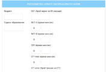
phes-bg
WebsiteRPi4 Tablet 2
Hardware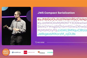
The power of JWT and cryptography
VideoRPi4 Tablet
Hardware{kind=link}
{kind=link}
{kind=link}
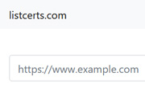
listcerts.com
Website{kind=link}
IPCC Sixth Assessment Report in Bulgarian
Video{kind=link}
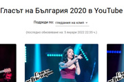
The Voice of Bulgaria 2020 on YouTube
Website{kind=link}
Can & Sanem
Video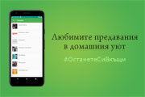
beeTV Plus
Mobile{kind=link}
{kind=link}
{kind=link}
{kind=link}
{kind=link}
{kind=link}
{kind=link}
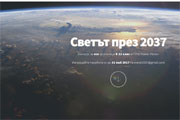
World 2037
Website{kind=link}
{kind=link}
{kind=link}
{kind=link}
Reading Music From Images
Course Project{kind=link}
wxReversi
Course Project{kind=link}
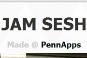
JamSesh
Website
Lia
Course Project{kind=link}
WineSquare
Website{kind=link}
Superscalar Processor
Course Project{kind=link}
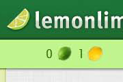
Lemonlime
Website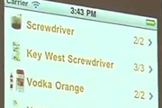
MixMaster
Mobile{kind=link}
MyTube
Course Project{kind=link}
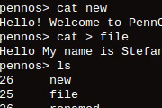
PennOS
Course Project{kind=link}
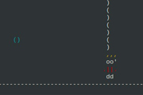
OAT Compiler
Course Project{kind=link}
PennQuiz
Course Project{kind=link}
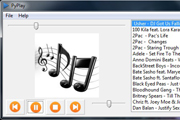
PyPlay
Course Project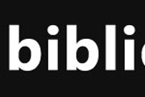
Biblioteka
Mobile{kind=link}
{kind=link}
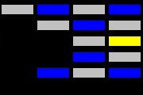
Breakout
Course Project{kind=link}
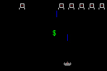
SpaceInvaders
Course Project{kind=link}
Grand Soccer
Course Project{kind=link}
{kind=link}
{kind=link}
Сертификати
Разработка на облачни услуги със софтуерната рамка Java Spring октомври 2019
Унивеситет "Вандербилт"
Идентификатор QUJF6REB8VK3
Разработка на уеб фронтенд с React ноември 2018
Хонконгски университет за наука и технологии
Идентификатор WERHEH5WYVUD
Алгоритми: дизайн и анализ, част II май 2015
Станфордски университет
Алгоритми: дизайн и анализ, част I декември 2014
Станфордски университет
Принципи на функционалното програмиране със Scala януари 2014
Федерална политехническа школа в Лозана (EPFL)
Papers
Authors
Reading Music From Images 2013
Department of Computer Science, University of Pennsylvania
From a historical perspective, there have been many scientific attempts to find a relationship between images and music with respect to the emotions that both subjects evoke. In modern times, these scientific efforts have been facilitated by the use of computers aiming to discover evidence for objective correspondence between visual and audible information. Based on existing research, this research is targeted to analyze currently used algorithms for reading music from images by comparing their output based on feedback from a pool of testers. The second goal is to provide an improved algorithm for conversion of images into music that will extend on the algorithms analyzed in the experiments. This is a process that uses the results of two existing algorithms in the design of a third algorithm, Extended Chromatic Analysis.
Статистически анализ на шампионатните отличия на българските футболни отбори 2013
Individual
Настоящето изследване разглежда националните отличия на българските футболни отбори в родното първенство. Главните категории на статистическия анализ са брой отличия от официални и неофициални турнири, класифициране на трофеите, които се считат за Национална купа, разпределение на клубните отличия по градове, анализиране на коефициента на успеваемост на българските отбори, подробен анализ на успеваемостта на "ПФК Левски (София)", "ПФК ЦСКА (София)" и "ПФК Лудогорец (Разград)" и последно - анализ на дубълите и требълите на българските футболни отбори. Статистическите данни са изложени в раздел "Статистика". Преди това е представена кратка история на българския футбол, обяснения по официалните трофейни турнири и пълен списък на 26-те отбора, които са печелили национални отличия. Изследването завършва със секция, която обобщава резултатите, и представя няколко интересни факта. Изследването не е рецензирано и е отворено за дискусии и по-нататъшни корекции и надграждания.